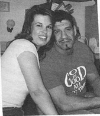
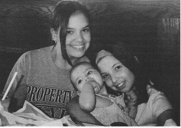
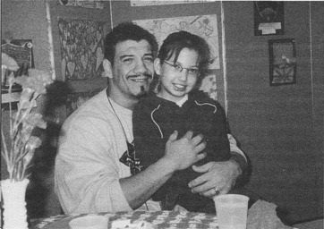
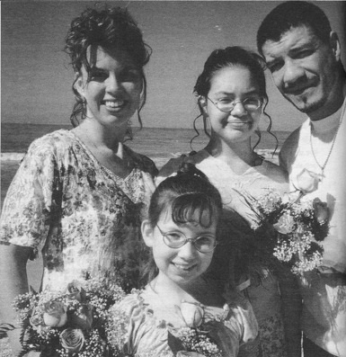
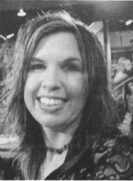

Глава 36
Перевод Александра Суменко для VSplanet.net
Когда я вышел из клиники, мой терапевт попросил меня не возлагать много надежд на возвращение к Викки. «Я знаю, вы думаете, что теперь сможете вернуться домой и все наладить, — сказал он. — Я просто хочу, чтобы вы знали, что вероятность этого весьма мала».

Мы с Викки
Естественно, все оказалось так, как он и говорил. Я умолял Викки дать мне еще шанс, но ей это было неинтересно.
— Я больше не люблю тебя, — сказала она. — Между нами все кончено.
— Это неправда, — я не в силах был принять этот факт. — Ты еще любишь меня. Я знаю, что это так.
— Нет, Эдди, не так.
Я слышал ее слова, но не хотел верить им. Я до боли хотел вернуть Викки. Я не мог понять, почему она разлюбила меня — я не перестал любить ее.

Мои прекрасные дочери: Шол, Шерилин и Кайли
Я пытался забыть Викки, честно пытался. Просил Господа освободить меня от боли. «Если Викки не должна быть частью моей жизни, — молился я, — тогда, Господи, пожалуйста, сними с меня эту тяжесть».
Но Бог не слушал меня. Он не позволял моей любви к Викки ослабеть. Теперь я понимаю, что на то была причина. У Бога был план на нас.
Со временем я начал понимать, что, если я люблю Викки бескорыстно, я должен быть готов отпустить ее. Я должен желать ей лучшего, даже если это разрывает мне сердце. Я должен принять то, что делает ее счастливой, даже если это означает, что мы больше не будем вместе, что она будет с другим.
Я должен быть готов потерять ее.
Приняв этот факт, я смог сделать следующие шаги в жизни. Я отвлекал себя от ненужных мыслей, проводя все свободное время в зале и на регулярных собраниях анонимных алкоголиков.
По сути, мы с Викки просто перестали разговаривать. Любой разговор превращался в скандал. Дошло до того, что мы буквально не могли стоять лицом к лицу. Все разговоры велись через наших адвокатов.
Хотя развод еще не был официально оформлен, мы стали встречаться с другими. Я стал встречаться с женщиной по имени Тара, которую встретил на собраниях. Она превосходно ко мне отнеслась. В моей жизни было несколько серьезных моментов, которые я бы не преодолел без нее.
Мы с Тарой съехались, когда я работал в инди, и очень скоро она сообщила мне о своей беременности. Сначала я не знал, как к этому отнестись. Конечно, я чувствовал радость, потому что дети — это благословение. Но я не был уверен, что готов начать новую семью. В конце концов, я только начал трезвую жизнь. Я привыкал к новой карьере независимого рестлера. И еще не был официально разведен с Викки.
Мы с Тарой разошлись задолго до рождения нашего ребенка. Этот разрыв был взаимным — отношения между нами просто не складывались. Хоть наши отношения не стали успешными, мы сделали вместе замечательную вещь: дали рождение дочери Кайли Мари. Она просто великолепна. Я считаю ее настоящим благословением в своей жизни.
С того момента Тара и я забыли личные противоречия и посвятили себя одному общему делу — любви к Кайли.
В клинике я пообещал себе стать ближе к моим девочкам, когда наконец-то вернусь к трезвой жизни. Это стало для меня главным приоритетом. Я не хотел, чтобы Шол и Шерилин боялись меня. Я безумно люблю их и не мог выносить того, что страх пересиливает в них любовь ко мне.
Несмотря на все ссоры и споры, Викки никогда не использовала детей в качестве оружия. Какими бы сильными ни были наши разногласия, она никогда не отрицала моих прав, как отца. Всегда поддерживала мое желание повидаться с дочерьми. Она искренне понимала трудности моего рабочего графика и тот факт, что я упорно работал, чтобы вернуть свою жизнь в нормальное русло.
До размолвки с Викки я почти не проводил время наедине с дочерьми. Викки всегда была рядом. Поначалу было непросто научиться общаться с ними наедине. Я осознал, что не имею понятия, как себя вести. Я постоянно звонил Викки с вопросом: «Что мне делать?»

Шерилин всегда заставляет меня улыбаться
Но со временем я научился быть хорошим отцом: заботиться о девочках, об их счастье и безопасности. Также я стал им хорошим другом. Мы вместе ходили на игровую площадку. Мы бегали, играли в прятки и догоняшки, и я забывал обо всех неприятностях. Это было круто. Я не представлял, какими поверхностными были наши отношения раньше, но я быстро понял, какими замечательными людьми являются Шол и Шерилин. Я стал относиться к ним, не только как к своим детям, но и как к личностям.
То проведенное вместе время сформировало прочную связь, существующую и по сей день.
Шаг за шагом мы с Викки снова начали общаться. Наши отношения оставались запутанными: в некоторые дни все было гладко, в другие — из рук вон плохо.
Позже Викки рассказывала, что следила за мной по Интернету. Сначала выходила в сеть, просто чтобы узнать, работаю я или нет, но потом она призналась, что отслеживала, как складывается моя жизнь. Викки, возможно, разлюбила меня в какой-то момент, но это не означало, что она перестала за меня переживать.
У Викки и меня стали случаться прекрасные телефонные разговоры. Вскоре она пригласила меня на ланч. Медленно, но верно, мы снова стали друзьями.
— Что бы ни случилось, — предложил я, — давай будем честны друг с другом.
Разговор был жестоким, но честным, поверьте мне — это не было весело. Мы разворошили все грязное белье, подняли весь мусор наших отношений. Сказали друг другу правду, а правда причиняет боль. Огромную боль.
Но только честность могла вылечить наши отношения.
Хотя мы открыли друг другу некоторые тяжелые факты, мы обнаружили, что все еще способны любить друг друга. Несмотря на все пережитые сложности, мы хотели быть вместе.
Это не случилось мгновенно. Сначала я с трудом верил словам Викки, что у нее еще остались чувства ко мне. Она слишком долго уверяла меня в обратном.
«Подожди-ка, — подумал я. — Почти два года она уверяла, что не хочет иметь со мной ничего общего, что больше не любит меня. Так почему она передумала?»
Я только смирился с тем, что Викки разлюбила меня. Мне он не нравился, но я принял его. Сама мысль о возвращении к ней казалась рискованной. Мне стало комфортно жить одному. Я свыкся с ролью холостяка. А теперь она вдруг просила меня не верить этому. Я больше не знал, что и думать!
Я не понимал того, что теперь Викки влюбилась уже в другого меня.
Ланчи превратились в ужины, и вскоре я снова стал встречаться со своей женой. Мы были честны друг с другом, чтобы ни у кого не осталось обид, если ничего не получится. Мы старались вести себя по-взрослому.
Все было очень романтично. Я водил Викки на настоящие свидания, словно мы были парой подростков. Помню, как однажды вечером мы пошли в кино, на «Миллионера поневоле» с Адамом Сэндлером. Мы держались за руки, смеялись, и я повернулся посмотреть на ее профиль. Несмотря на темноту, я разглядел ее улыбающееся лицо, полное света. «Ого, — подумал я. — Я люблю эту женщину. Спасибо, Боже».
Однажды вечером, когда мы уже встречались около 2 месяцев, Викки сказала:
— Ты можешь не уезжать домой сегодня.
— Нет, — ответил я. — Не могу. Не хочу посылать детям неверное послание. Мы еще не знаем, что с нами будет в итоге.
Викки уважала меня. Она знала, через сколько проблем мне пришлось пройти.
— Как скажешь, — сказала она. — Не будем торопиться. Почему бы тебе сегодня не лечь на диване?
Это был хороший компромисс. В ту ночь я зашел к девочкам и увидел, как мои дочери спят в своих кроватках. Я заплакал навзрыд, вот чего мне не хватало так долго. Конечно, девочки навещали меня и оставались на ночь, но то был не их дом. Их дом был у Викки.
— Спасибо, Господи, — молился я, — что позволяешь мне снова видеть, как они спят в своих кроватях. Спасибо, что позволяешь мне быть здесь.
Казалось, что сам Господь направлял нас в отношении представления детям идеи о нашем с Викки сближении. Мы не торопились с этим. Начав встречаться, мы попросили их не понимать это превратно. С одной стороны, они были счастливы снова видеть папочку и мамочку вместе, с другой — боялись, что все закончится, как в прошлый раз.
— Я люблю вас обоих, — говорила Шол, — и мне нравится видеть вас вместе. Только я не хочу, чтобы вы снова ругались, как раньше.
Мы пообещали друг другу, что, если ничего не получится, приложим все усилия, чтобы все закончилось мирно. Шол и Шерилин были маленькими девочками, но уже повидали столько уродства и ужасов. Я не хотел причинять им новую боль.
Спустя примерно полгода Викки и я стали всерьез рассматривать наши отношения.
Когда мы выпустили все плохие чувства, всю боль, гнев и опасения, мы начали вспоминать, что в нас есть хорошего. Мы вспомнили, сколько удовольствия доставляли друг другу. Исцелению способствовала и мощная физическая связь. Между нами было столько страсти. Что бы ни произошло, между нами еще была искра. И огонь был еще горяч.
Викки лезла из кожи вон, чтобы понять причину моего поворота к трезвой жизни. Она ходила на собрания анонимных алкоголиков, чтобы разобраться в моей болезни. Она поняла, что я был подвержен опасной болезни и все ужасные вещи, которые я делал, были следствием болезни, а не личного отношения. Также важно было, чтобы Викки поняла свою роль в моей болезни. Она узнала, что сама позволяла мне принимать запрещенные препараты и что ей тоже нужно вести себя по-другому.
В каком-то смысле, Викки заболела просто от того, что находилась рядом со мной. Зависимость похожа на простуду: если вы общаетесь с больным, вы тоже заболеете. Викки не страдала зависимостью, но она стала созависимой со мной и должна была вылечиться от этого.
Поддержка Викки изменила мою жизнь. Некоторые члены семьи не понимали мою зависимость. Они не считали ее чем-то реальным. Их отношение выражалось просто: если ты много пьешь — не пей. Но Викки полностью поддерживала меня:
— Делай, что нужно, чтобы оставаться трезвым, — говорила она. — Я всегда буду с тобой.
Тем временем процесс нашего развода продолжался. К счастью, это не происходит мгновенно. Викки позвонили и сказали, что бумаги готовы, осталось только получить наши подписи, чтобы оформить развод.
Она позвонила мне с вопросом:
— Что мне делать?
— Решай сама, — сказал я. — Если хочешь подписать, так мы и сделаем.
Викки хотела разводиться, а не я. И только она могла отменить этот процесс. Она позвонила своему юристу и сказала:
— Мы не будем этого делать.
Наша семья шла на поправку.
Викки и я начали встречаться сразу после того, как я продлил аренду своей квартиры еще на полгода. Это совпадение дало нам время решить, что делать дальше. Нам не нужно было спешить с решением, стоит ли жить снова вместе.

Моя замечательная семья снова вместе, после того как Викки и я обновили наши клятвы
Спустя 8 месяцев мы почувствовали, что готовы снова быть вместе, снова готовы быть женатыми. Мы объяснили девочкам, что снова собираемся быть вместе. Они не знали, как на это реагировать, но я видел страх на их лицах. Они столько повидали, что я не могу винить их за такую реакцию.
Вчетвером мы переехали в светлую и приятную новую квартиру в том же комплексе, где жила Викки с детьми. Перед переездом мы освятили квартиру: помолились перед домом и окропили елеем во славу Иисуса. Это было похоже на новый старт.
Я был переполнен радостью от воссоединения семьи. Я хотел сделать что-нибудь особенное, чтобы отметить наш второй шанс, поэтому я обратился к пастору Фейру. Он предложил Викки и мне обновить наши свадебные клятвы. Он также думал, что нам следует исповедоваться друг другу, выступить с публичными извинениями, чтобы оставить прошлое позади.
Обновление клятв значило для меня многое. В каком-то смысле, даже больше, чем свадьба. В этот раз все было по-настоящему. Я не говорю, что раньше было не по-настоящему, просто мы так выросли с того момента. Мы были в сто раз ближе друг к другу, чем во время свадьбы.
Когда мы рассказали девочкам о планах обновить свадебные клятвы, они были безумно счастливы. Просто сияли. Я понял, что они больше не боятся.
Мы решили провести ритуал на пляже в Санд Ки, возле Клируотера. Это было личное собрание небольшой группы людей: я, Викки, Шол, Шерилин, пастор Фейр и несколько особенных гостей, включая брата Эктора и моего наставника Боба.
Это был поистине прекрасный день. Я извинился за всю боль, причиненную Викки за прошедшие годы. Она, в свою очередь, попросила прощения за все действия и слова, которые ранили меня. Для меня желание Викки признать это на глазах у людей значило очень многое.
Потом мы обновили свои свадебные клятвы. Я хочу делать это снова и снова, каждые несколько лет. Это помогает не забывать причины, по которым мы поженились. Хоть мы и принесли клятвы однажды, это не означает, что их нельзя повторять.
Также это очень романтично. Среди всего прочего, за последние пару лет я понял, что брак не означает конец романтики. На самом деле, все наоборот. Брак значит жизнь. Две жизни становятся одной, сливаются вместе. Викки и я следим за тем, чтобы романтика не прекращалась. Мне доставляет огромное удовольствие выражать ей свою любовь и привязанность.
Мои дети все время закатывают глаза, потому что я не скрываю свою любовь к жене даже на публике. Они видят, как родители целуются и ходят за руки, и говорят: «Ой, папа!»
Но я знаю, что в глубине души им это нравится.

Викки за кулисами Madison Square Garden
Я без ума от своей жены. Мне достаточно взглянуть на нее, и я расплываюсь в улыбке.
Я искренне верю, что Господь хотел дать нам еще один шанс. И поэтому наш развод не получился. Некоторые разводятся за день, но у нас все было по-другому. Процесс нашего развода тянулся вечно.
Господь сделал так, чтобы мы снова оказались вместе. Но наши отношения в корне изменились. Мы стали совершенно другими людьми. Когда мы обновляли клятвы, я женился уже на другой Викки, а она выходила замуж за другого меня. Мы теперь ближе друг другу, чем когда-либо.
Я никогда не любил никакую женщину так, как люблю Викки. Она для меня самая сексуальная женщина в мире. Я люблю в ней все. Глаза, улыбку, тело. Походку, смех, улыбку. Прикосновения, запах. То, как она играет со мной, как утешает меня, как любит меня.
Жить жизнью жены рестлера может только сильная женщина. Иногда мне кажется, что работа Викки гораздо тяжелее моей. Она заботится обо мне, заботится о девочках, ведет домашнее хозяйство. Лезет из кожи вон, чтобы я мог делать свою работу: от упаковки моих чемоданов до организации перелетов. Викки является, по сути, моим агентом, а также женой и лучшим другом. Она облегчает каждую минуту моей жизни.
Мне посчастливилось встретить Викки. Я искренне верю, что мои с ней отношения — это дар Божий. Когда ты любишь кого-то столь глубоко, страстно и беззаветно, это должно проистекать от Бога.